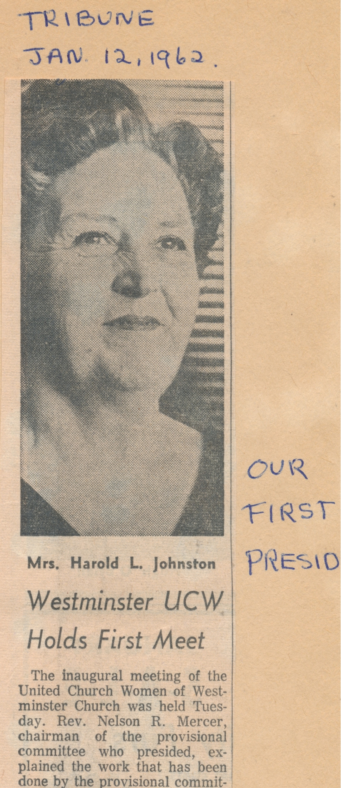

-1-MasterItem.svg)
Stories of Westminster United Church & its People / Page
190
The conclusion of this rethinking was that it was time for women to be involved
in the total
mission of the Church, not only in their historical roles but also in ground
level maintenance
and administration of the church at all its levels, General Council,
Conferences, Presbyteries and
Congregations. Out with Sessions and Elders (the province of Men alone) in with
general boards
with equal participation, women and men.
Even the Moderator could be a woman. Westminster’s own Lois Wilson (pictured here with her Dad,
Dr. E.G.D. “Dink” Freeman, was the first to be so honoured. (1980-1982) (Lois’s Mom was an
inexhaustible leader in our Sunday School and C.G.I.T. for a number of years.)
This change in thinking was formalized in January 1st of 1962 as ‘United Church
Women.’ The stated purpose of this new grouping: “To unite women of the
congregation for the total mission of the church and to provide a medium through
which we may express our loyalty and devotion to Jesus Christ in Christian
witness,
study, fellowship and service.”
In 1962 some unknown hand, a person with a sense of history, began to keep a
scrapbook. The information which follows comes from that book.
Jon-UCW PIC #1 goes here. It stretches down the left side of the page and the
text
follows it down the right side of the page (right to the words Mrs. R.D Jackson.
The caption under the picture is: Mrs Harold L. Johnson-President 1962-63
We introduced The United Church Women as an organizational platform for
women's work in Westminster in 1962.: Mrs. J. Stewart McInnes presented the
slate
of nominations: Mrs. Harold L. Johnson as President; Mrs. Charles Gerrie, Mrs.
Murray Auld, and Mrs. James E. Wilson Vice Presidents; Mrs. J.S. Henderson
Recording Secretary, Mrs. Douglas Arnott, Corresponding Secretary ; and Mrs.
Robert
Jeske Treasurer.
A copy of Bert Macfarlane’s Westminster Letter of March 1962 filled in further details:
Women and Westminster United Church
